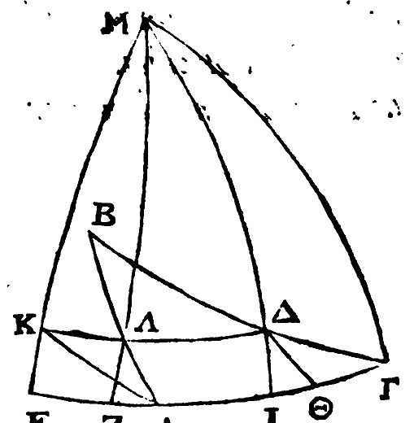

Prop. I. Probl. (Halley 1758, p. 48)¶
Menelai Alexandrini Sphaericorum Lib. II Prop. I (Halley 1758, p. 48)


Enuntiatio (Halley 1758, p. 48)
A sumpto puncto in latere trianguli Sphaerici obtusanguli, angulo obtuso opposito; ducere arcum circuli magni, qui cum altero ex arcubus, obtusum angulum continentibus, comprehendat angulum eidem obtuso angulo aequalem.
[§2.1 · Constructio, p. 48] Sit triangulum ΑΒΓ quale descripsimus; ita ut ΑΒ, ΒΓ sint minores semicirculo; & capiatur in arcu ΒΓ punctum Δ: oporteat ducere ad arcum ΑΓ à puncto Δ arcum circuli magni, continentem cum ipso ΑΓ angulum aequalem obtuso ΒΑΓ.
Sit Μ polus arcus ΑΓ, & per puncta Μ, Δ ducatur arcus circuli magni ΜΔΙ; & producatur arcus ΑΓ ad Ε, ita ut ΑΕ, ΓΙ sint aequales; & ducatur ΜΕ arcus circuli magni. Quoniam autem ΓΒ, ΒΑ simul minores sunt semicirculo, erit (per 13mam hujus [Lib. I])… Quod erat faciendum.